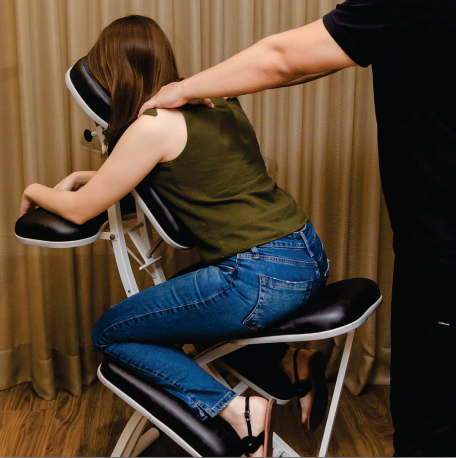

Qual é o serviço de sua preferência?

Quick massage
Técnica rápida de relaxamento, para aliviar tensões e estresse em poucos minutos.

Maca
Técnica realizada com o cliente deitado, proporcionando relaxamento profundo e alívio de dores musculares.

Reflexologia podal
Técnica que estimula pontos dos pés para equilibrar o corpo e promover bem-estar.